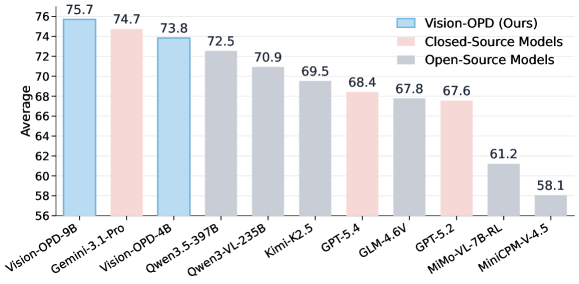
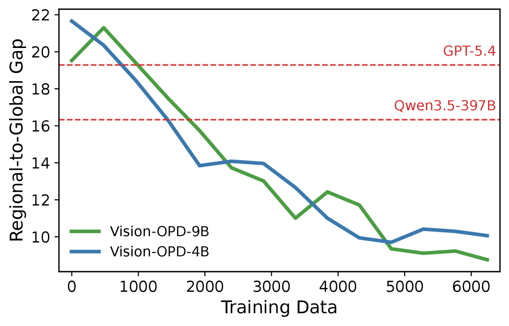
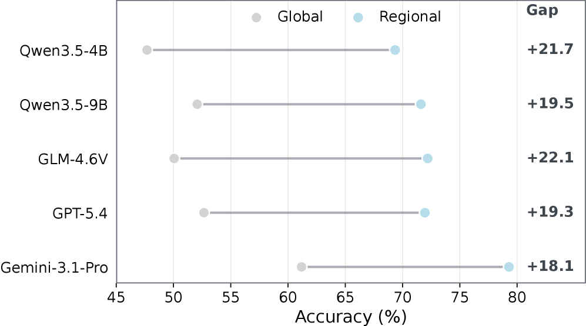
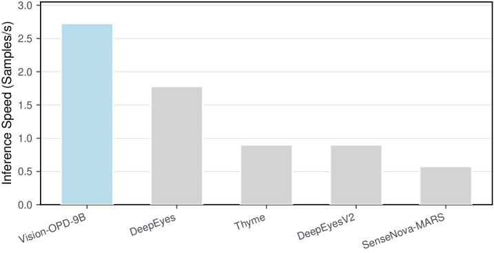

![Figure 4: Overview of Vision-OPD. Left: Fine-grained visual questions are generated on evidence-centered crops and grounded back to the full image via bounding-box overlay. Right: A teacher policy p T ( ⋅ ∣ x crop ) p_{T}(\cdot\mid x_{\text{crop}}) and a student policy p S ( ⋅ ∣ x global ) p_{S}(\cdot\mid x_{\text{global}}) are instantiated from the same MLLM. The student generates on-policy rollouts y ∼ p S y\sim p_{S} , and the per-token divergence D ( p T ∥ p S ) D(p_{T}\|p_{S}) along these rollouts provides dense supervision. Gradients flow only through the student’s logits, enabling label-free self-distillation for fine-grained visual understanding.](figures/1089/fig_005.png)
Vision-OPD proposes a self-distillation framework that transfers a model's own crop-conditioned perception to full-image inference, significantly narrowing the regional-to-global perception gap in MLLMs without external teachers or inference-time tool use.
本文提出Vision-OPD，一种无需外部教师模型或推理时工具调用的自蒸馏框架，通过将模型自身的裁剪条件感知能力迁移至全图推理，显著缩小了多模态大语言模型在细粒度理解上的区域-全局感知差距。仅用6.2K合成三元组训练的4B/9B模型，在多个细粒度基准上超越了包括GPT-5.4、Gemini-3.1-Pro在内的更大开源和闭源模型，且不增加推理开销。
Deep Note — vision-opd
0) Metadata
- Title: Vision-OPD: Learning to See Fine Details for Multimodal LLMs via On-Policy Self-Distillation
- Alias: vision-opd
- Authors: Qianhao Yuan, Jie Lou, Xing Yu, Hongyu Lin, Le Sun, Xianpei Han, Yaojie Lu
- arXiv ID: 2605.18740
- Published:
- Links:
- Abs: https://arxiv.org/abs/2605.18740
- HTML: https://arxiv.org/html/2605.18740v1
- PDF: https://arxiv.org/pdf/2605.18740
- Tags: multimodal-llm, fine-grained-understanding, self-distillation, on-policy-distillation, visual-zoom
- Domains: system_safety
- Rating: 5/5 (base 1 + quality 2 + observation 2)
1) Why-read
Vision-OPD proposes a self-distillation framework that transfers a model's own crop-conditioned perception to full-image inference, significantly narrowing the regional-to-global perception gap in MLLMs without external teachers or inference-time tool use.
2) CRGP
C — Context
Multimodal Large Language Models (MLLMs) excel at general visual understanding but struggle with fine-grained details, often missing small but decisive evidence in full images. Recent 'Thinking-with-Images' methods improve performance by using agentic visual tools (e.g., cropping, zooming) during inference, but incur high computational overhead. The key observation is that the same MLLM answers fine-grained questions more accurately when given evidence-centered crops than full images, revealing a regional-to-global perception gap.
R — Related work
- Fine-grained visual understanding benchmarks (V* Bench, ZoomBench, HR Bench, MME-RealWorld) highlight MLLM limitations on detail-dependent tasks.
- 'Thinking-with-Images' methods (e.g., agentic tool use) improve fine-grained accuracy but require repeated image encoding and model calls at inference.
- On-Policy Distillation (OPD) combines on-policy sampling with dense token-level supervision, but prior OPD methods rely on external stronger teachers or ground-truth labels.
- Reinforcement learning with verifiable rewards (e.g., GRPO, DAPO) provides sparse sequence-level feedback and requires verifiers, unlike Vision-OPD's dense token-level approach.
G — Gap
Existing methods for fine-grained visual understanding either rely on inference-time tool use (costly) or use off-policy distillation or sparse reward signals that suffer from distribution mismatch or lack dense supervision. No prior work leverages the model's own privileged crop-conditioned perception as a dense, on-policy training signal to internalize zooming benefits without external teachers, labels, or verifiers.
P — Proposal
Vision-OPD instantiates two policies from the same MLLM: a crop-conditioned teacher (privileged regional input) and a full-image-conditioned student. The student generates on-policy rollouts from the full image, and Vision-OPD minimizes token-level KL divergence between teacher and student next-token distributions along these rollouts. This transfers the model's own regional perception ability to its global policy, enabling fine-grained understanding in a single forward pass without inference-time tools.
---
4) Experiments
Main results
Vision-OPD-4B/9B models, trained on only 6.2K synthetic triplets, outperform much larger open-source models (e.g., Qwen3.5-397B), closed-source models (e.g., GPT-5.4, Gemini-3.1-Pro), and agentic 'Thinking-with-Images' methods on fine-grained benchmarks (V* Bench, ZoomBench, HR Bench 4K/8K, MME-RealWorld-Lite, MME-RealWorld-CN). On hold-out tasks, general visual understanding is maintained, showing no catastrophic forgetting.
Ablation
On-policy sampling is critical: off-policy distillation (using teacher-generated prefixes) yields significantly lower performance than on-policy Vision-OPD. Dense token-level supervision outperforms sparse sequence-level rewards (e.g., GRPO-style), confirming the importance of per-token guidance for fine-grained reasoning.
Limitations
['The method requires constructing triplets (full image, crop, question) with bounding boxes, which may not scale to all fine-grained tasks without automatic annotation.', 'Vision-OPD is evaluated on 4B/9B models; effectiveness on larger models or different architectures is not explored.', 'The approach assumes the crop is evidence-centered; if the region of interest is ambiguous or multiple regions are relevant, performance may degrade.']
5) Why it matters
- Demonstrates that fine-grained failures in MLLMs are often due to attention/contextual focus rather than recognition ability, aligning with your interest in model attention and perception bottlenecks.
- Provides a training-only solution (no inference overhead) that could be combined with your work on efficient MLLM inference or self-supervised learning.
- The on-policy self-distillation framework is general and could be applied to other modalities or tasks where privileged information exists (e.g., temporal crops in video).
- Shows that small models can surpass much larger ones on specific tasks via targeted training, relevant to your research on model compression or data efficiency.
6) Next steps
- [ ] Evaluate Vision-OPD on your own fine-grained visual understanding benchmarks to verify reproducibility and domain transfer.
- [ ] Explore extending the framework to multi-crop or dynamic attention mechanisms for cases with multiple relevant regions.
- [ ] Investigate combining Vision-OPD with other self-supervised objectives (e.g., contrastive learning) to further close the perception gap.
- [ ] Apply the on-policy self-distillation idea to other privileged information settings, such as temporal crops in video understanding or high-resolution patches in medical imaging.
7) Scoring
5/5 = base 1 + quality 2 + observation 2
Vision-OPD：通过在线策略自蒸馏让多模态大语言模型看清细节
主要结论 - Vision-OPD通过在线策略自蒸馏，将模型自身的裁剪条件感知（教师）迁移至全图推理（学生），无需外部教师或推理时工具。 - 仅用6.2K合成数据训练的4B/9B模型，在V* Bench、ZoomBench、HR Bench 4K/8K、MME-RealWorld等细粒度基准上超越Qwen3.5-397B、GPT-5.4等更大模型。 - 在线策略采样和密集token级监督是关键：离线策略蒸馏和稀疏序列级奖励（如GRPO）均显著低于Vision-OPD。 - 该方法不增加推理开销，且保持通用视觉理解能力，无灾难性遗忘。 - 框架具有通用性，可推广至其他模态或存在特权信息的任务（如视频时间裁剪、医学图像高分辨率块）。
1) 阅读理由
Vision-OPD提出一种自蒸馏框架，将模型自身的裁剪条件感知迁移至全图推理，显著缩小区域-全局感知差距，无需外部教师或推理时工具。
2) CRGP（背景 / 相关工作 / 差距 / 方案）
背景：多模态大语言模型在通用视觉理解上表现出色，但在细粒度细节上常遗漏关键证据。近期'Thinking-with-Images'方法通过推理时裁剪、缩放等工具提升性能，但计算开销大。关键观察：同一模型在给定证据中心裁剪时比全图回答更准确，揭示了区域-全局感知差距。
相关工作：细粒度视觉理解基准（V* Bench、ZoomBench、HR Bench、MME-RealWorld）凸显了MLLM在细节依赖任务上的局限；'Thinking-with-Images'方法提升精度但需重复图像编码和模型调用；在线策略蒸馏（OPD）结合在线策略采样与密集token级监督，但先前OPD依赖外部强教师或真实标签；强化学习（如GRPO、DAPO）提供稀疏序列级反馈，需要验证器。
差距：现有细粒度理解方法要么依赖推理时工具（昂贵），要么使用离线策略蒸馏或稀疏奖励信号，存在分布不匹配或缺乏密集监督。尚无工作利用模型自身的裁剪条件感知作为密集、在线策略训练信号，内化缩放优势，无需外部教师、标签或验证器。
方案：Vision-OPD从同一MLLM实例化两个策略：裁剪条件教师（特权区域输入）和全图条件学生。学生从全图生成在线策略轨迹，Vision-OPD沿这些轨迹最小化教师与学生下一token分布的token级KL散度。这将模型自身的区域感知能力迁移至全局策略，实现单次前向传播的细粒度理解，无需推理时工具。
3) 实验
Vision-OPD-4B/9B模型仅用6.2K合成三元组训练，在细粒度基准（V* Bench、ZoomBench、HR Bench 4K/8K、MME-RealWorld-Lite、MME-RealWorld-CN）上超越更大开源模型（如Qwen3.5-397B）、闭源模型（如GPT-5.4、Gemini-3.1-Pro）以及agentic 'Thinking-with-Images'方法。在保留任务上，通用视觉理解能力得以保持，无灾难性遗忘。
消融实验
在线策略采样至关重要：离线策略蒸馏（使用教师生成的前缀）性能显著低于在线策略Vision-OPD。密集token级监督优于稀疏序列级奖励（如GRPO风格），证实了逐token指导对细粒度推理的重要性。
局限性
该方法需要构建包含边界框的三元组（全图、裁剪、问题），若无自动标注可能难以扩展到所有细粒度任务；Vision-OPD仅在4B/9B模型上评估，未探索更大模型或不同架构的有效性；该方法假设裁剪是证据中心的，若感兴趣区域模糊或涉及多个相关区域，性能可能下降。
4) 重要性
- 表明MLLM的细粒度失败常源于注意力/上下文聚焦而非识别能力，与模型注意力和感知瓶颈的研究兴趣一致。
- 提供一种仅训练时（无推理开销）的解决方案，可与高效MLLM推理或自监督学习工作结合。
- 在线策略自蒸馏框架具有通用性，可应用于其他模态或存在特权信息的任务（如视频时间裁剪）。
- 展示小模型通过针对性训练可在特定任务上超越大模型，与模型压缩或数据效率研究相关。
5) 下一步
- [ ] 在自有细粒度视觉理解基准上评估Vision-OPD，验证可重复性和领域迁移。
- [ ] 探索将框架扩展至多裁剪或动态注意力机制，以处理多个相关区域的情况。
- [ ] 研究将Vision-OPD与其他自监督目标（如对比学习）结合，进一步缩小感知差距。
- [ ] 将在线策略自蒸馏思想应用于其他特权信息场景，如视频理解中的时间裁剪或医学图像中的高分辨率块。



